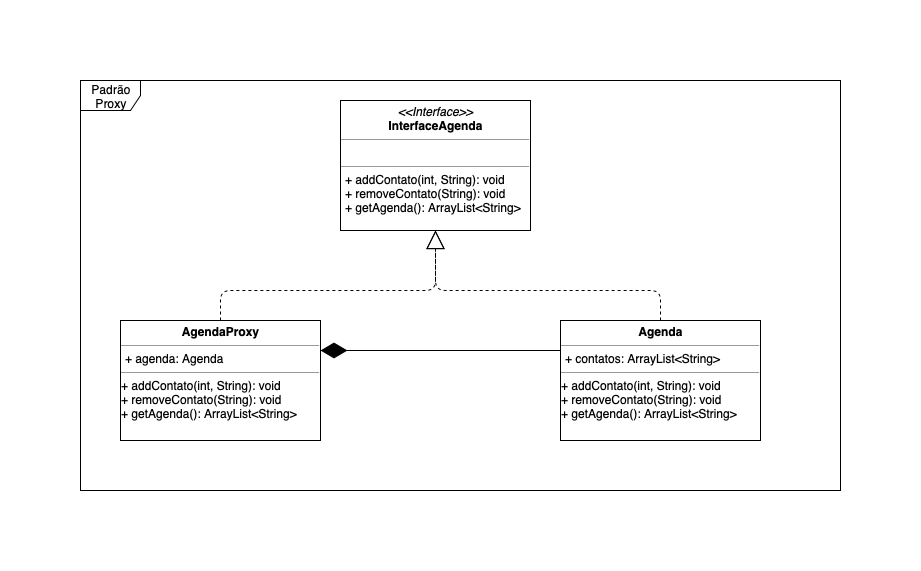

GOFs: Proxy e Facade
Histórico de Revisão
| Data | Versão | Descrição | Autor |
|---|---|---|---|
| 23/05/2019 | 0.1 | Adicionando exemplo do Proxy | Gabriela Guedes e Letícia Meneses |
| 23/05/2019 | 0.2 | Adicionando definição, benefícios e estrutura mínima do Proxy | Renan Schadt e Rômulo Vinícius |
| 23/05/2019 | 0.3 | Aplicabilidade do Proxy no projeto translate.me | Alexandre Miguel |
| 23/05/2019 | 0.4 | Definição do padrão Facade | João Robson e Davi Alves |
| 23/05/2019 | 0.5 | Aplicabilidade do Facade no projeto translate.me | Helena Goulart |
| 24/05/2019 | 0.6 | Adicionando exemplo do facade ao documento | Luiz e Victor |
1. Proxy
1.1 O que é?
Proxy é um padrão de design estrutural, responsável por controlar o acesso a um objeto, agindo como um "substituto" do objeto real.
No padrão Proxy se faz necessário a criação de uma classe que implementa a mesma interface implementada pelo serviço, o proxy deve seguí-la para poder se passar por este. Ao receber uma requisição de um cliente, o proxy realiza suas funções (cache, lazy initialization, entre outros) e delega o trabalho principal ao serviço real.
O proxy permite a execução de rotinas antes ou depois da requisição ser repassada ao serviço, como ele é implementado com a mesma interface deste, pode ser passado a um cliente que espera o serviço real.
Entre as aplicações mais relevantes do Proxy é possível citar: 1. Lazy initialization (atrasar a inicialização de um objeto, até ele ser usado). Assim é possível evitar desperdício de recursos, não criando o objeto na inicialização do aplicativo, sendo que este é pesado e raramente necessário.
-
Controle de acesso, permite limitar quais clientes podem fazer uso de um serviço específico, o proxy passa a requisição ao serviço real, somente se as credenciais do cliente atendem aos critérios propostos.
-
Execução local de um servidor remoto, ou seja, quando uma ação é feita pelo cliente (local), o proxy repassa esta ação através de uma requisição pela rede e processada no servidor.
-
Lidar com registro de requisições. O proxy pode armazenar cada requisição antes de direcioná-la, o que é útil para manter um histórico de requisições feitas ao serviço.
-
Armazenar resultados em cache. O proxy armazena os resultados das requisições dos clientes em cache, aumentando o desempenho caso hajam requisições recorrentes que retornam o mesmo o resultado.
-
Desalocação de recursos em serviços não utilizados. O proxy mantém os registros dos clientes que possuem uma referência à instância do serviço, e pode desativá-lo, caso nenhum cliente que faça uso deste serviço esteja ativo.
1.2 Benefícios
- Introdução de novos proxies sem mudar o serviço ou clientes.
- Controla o acesso ao serviço sem que os clientes saibam.
- Fornece segurança extra, quando valida usuários que estão fazendo requisições.
- Proxy funciona mesmo com o serviço ainda não estando pronto.
- Melhora de desempenho, através do uso de cache e lazy initialization.
1.3 Estrutura Mínima

1.4 Exemplo em Java
 Veja o exemplo completo no repositório.
1.5 É aplicavel em nosso projeto?
A estrutura do proxy é facilmente aplicável no translate.me. Veja abaixo um exemplo inicial de restrições que podem ser implementadas por proxy:
Controlar visualização de fragmentos: A visualização de um fragmento deve ter algumas seguranças em relação a qual usuário está visualizando o fragmento, caso seja o usuário tradutor, que está traduzindo, ele deve poder ver tanto o texto a ser traduzido quanto a sua tradução, caso seja o autor, não deve ser visto a tradução até que a mesma esteja pronta. Um usuário não envolvido não deve ter permissão de visualização.
Inclusive o Django, plataforma utilizada no projeto do translate.me para fazer a API de microsservissos, utiliza deste padrão de projeto. O serializer do Django é um proxy que adiciona restrições, controle e valida os dados serão passados para a API.
2. Facade
2.1 O que é?
Facade é um dos Padrões de Design mais simples e mais usados na programação orientada a objetos. Ele discute o encapsulamento de um subsistema complexo dentro de um único objeto de interface. Isso reduz a curva de aprendizado necessária para alavancar com sucesso o subsistema. Também promove o desacoplamento do subsistema de seus potencialmente muitos clientes. Por outro lado, se o Facade for o único ponto de acesso para o subsistema, ele limitará os recursos e a flexibilidade que os "usuários avançados" podem precisar. Esse tipo de padrão de projeto vem sob padrão estrutural, pois esse padrão adiciona uma interface ao sistema existente para ocultar suas complexidades. Esse padrão envolve uma única classe que fornece métodos simplificados requeridos pelo cliente e chama representantes para métodos de classes de sistema existentes.
2.2 Benefícios
- Permite que os subsistemas sejam mais fáceis de serem utilizados;
- Pode encapsular uma ou mais interfaces mal projetadas em uma mais concisa;
- Reduz a complexidade de uma api, liberando acesso a métodos de alto nível encapsulando os demais.
2.3 Exemplo em Java
 Veja o exemplo completo no repositório.
Veja o exemplo completo no repositório.
2.4 É aplicavel em nosso projeto?
Sim, é possível aplicar o Facade no translate.me nos seguintes contextos:
-
Serviço de tradução de texto: ao ser submetido, o texto do autor passa por várias etapas que, como cliente, ele não tem acesso. Logo, se o usário tivesse acesso à todo processo de fragmentação do texto, distribuição dos fragmentos para tradutores, revisão e alterações, seria um processo bastante complexo. Com a aplicação do Facade, ele tem uma entrada simples (o texto) e uma única saída (o texto traduzido);
-
Serviço de pagamento pela tradução: uma vez que o translate.me recebe o texto realiza o processo de fragmentação, distribuição, tradução e revisão, o pagamento pelo serviço é atribuído a cada tradutor de acordo com a quantidade de palavras interpretadas. Esse cálculo exige que percorra por toda o processo de submissão do texto, porém o usuário autor enxerga apenas um valor a ser pago pelo serviço. O que ele não tem contato é que esse valor é dividido entre vários tradutores, que por sua vez também possuem acesso a somente um dado: o valor pago pelo serviço de tradução de uma quantidade 'x' de palavras.
3. Referências
3.1 Links de sites
- DevMedia - Facade em Java
- DevMedia - Facade Aplicado
- SourceMaking - Facade Design Pattern
- DevMedia - Conheça o Pattern Proxy
- SourceMaking - Proxy Design Patterns
3.2 Livros e artigos
[1] LISBÔA, Jonivan Coutinho; DE CARVALHO, Sérgio Teixeira; LOQUES FILHO, Orlando Gomes. Um Design Pattern para Configuração de Arquiteturas de Software. In: The 2nd. Latin America Conference on Progamming Languages of Patterns. 2002.
[2] GORLA, João Paulo Ferro; FOSCHINI, Ivan João. Arquitetura para desenvolvimento web baseado em jsf 2.0 utilizando padrões de projeto. Revista TIS, v. 2, n. 3, 2014.
[3] DE ALBUQUERQUE, Marcelo Torres; ROJAS, Alexandre; RIBEIRO, Paulo Cezar M. Utilizando Design Patterns GoF no apoio ao desenvolvimento de um Framework Java. Cadernos do IME-Série Informática, v. 30, p. 13-27, 2010.